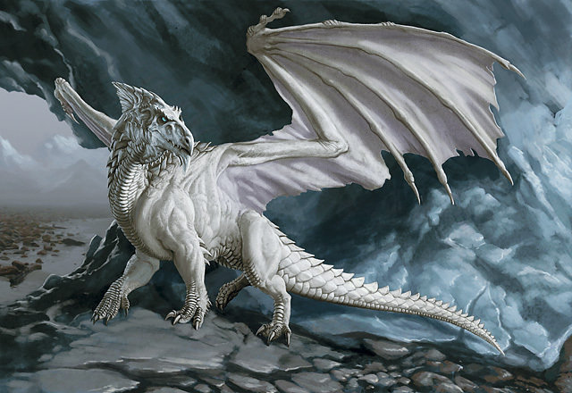
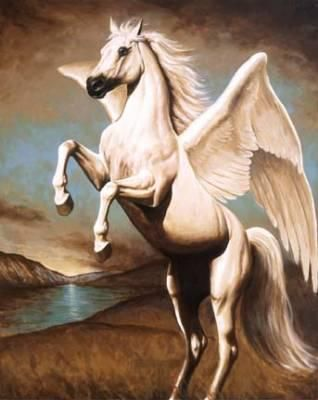

Animaux De Légende en Tout Genre
 
Venez découvrir un monde extraordianaire avec des animaux de légende dans...
10
lancement
Venez découvrir un monde extraordianaire avec des animaux de légende dans...
10
lancement
Bienvenue sur Animaux de Légende en tout Genre, consacré aux récits univers mythiques et légendaires Dédié aux univers et récits imaginaires où la magie tient une place importante, qu’ils soient tirés de mythes ou de fictions, Dol Celeb est un site sur la fantasy, les mythologies, les légendes, le médiéval-fantastique, l’héroic-fantasy,… A travers les pages du site vous pourrez découvrir entre autre les grands récits, les divinités mythologiques, héros et personnages célèbres, monstres, créatures et animaux fabuleux, mais aussi des lieux fameux et des informations sur la magie, des objets,… Issus des mythologies, des légendes, inventés par des auteurs ou créateurs de jeux, les animaux fabuleux, créatures et monstres sont très présents dans les récits et univers. Leur rôle est majeur car terrassés ils font de leur vainqueur un héros ou alimentent des légendes depuis des siècles. Bonne visite !
hello